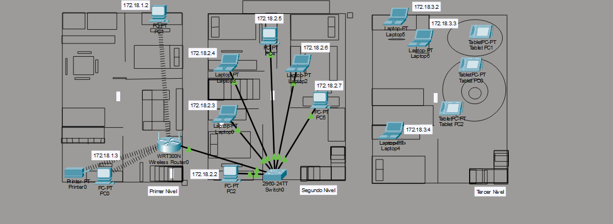

Bueno, para empezar, este proyecto consistía en diseñar e implementar una red LAN doméstica dentro de una casa de tres niveles, simulando cómo funcionaría la conexión de diferentes dispositivos dentro de un hogar real. La idea principal era aprender cómo se estructura una red local, cómo se conectan los dispositivos entre sí y cómo se distribuye la conexión utilizando routers, switches y repetidores inalámbricos. Además, todo debía quedar documentado tanto de forma teórica como práctica, incluyendo un video explicando el funcionamiento completo del proyecto.
Sinceramente, al inicio parecía simplemente “conectar dispositivos”, pero mientras más leíamos las instrucciones más nos dábamos cuenta de que prácticamente estábamos armando una red completa como las que existen en casas grandes o incluso pequeñas oficinas. Primero era necesario crear el plano de una casa de tres niveles y luego planificar dónde iría cada dispositivo y cómo se conectarían entre sí. Básicamente era como jugar a ser técnico de redes, pero con más configuraciones y menos paciencia.
En el primer nivel se debía configurar el router principal utilizando direcciones IP de clase B y seguridad mediante contraseña. Además, aquí se conectaban dos computadoras y una impresora de forma inalámbrica. Algo que dejó bastante aprendizaje fue entender cómo el router funciona como el centro principal de toda la red y cómo administra las direcciones IP para que todos los dispositivos puedan comunicarse correctamente. Porque sinceramente, antes de esto muchos solo veíamos el router como “la caja que da internet”.
Luego, en el segundo nivel, se instalaba un switch conectado en cascada con el router del primer piso. Aquí se debían conectar tres laptops y tres computadoras adicionales. Y sinceramente, ahí fue donde empezamos a entender mejor la diferencia entre un router y un switch, porque aunque ambos sirven para redes, cada uno cumple funciones diferentes dentro de la comunicación de los dispositivos.
Después, en el tercer nivel, se utilizaba un repetidor inalámbrico conectado en cascada desde el switch del segundo nivel para extender la señal WiFi hacia el último piso. En esta área se conectaban tres tablets y tres laptops de forma inalámbrica, aplicando también medidas de seguridad mediante contraseña. Y sinceramente, eso hizo que todo el proyecto se sintiera mucho más real, porque prácticamente estábamos simulando cómo se distribuye internet dentro de una casa donde la señal normalmente no llega bien a todos lados.
